Selecting plots
selecting_plots.RmdSetup
# libraries
library(forestables)
#> Loading required package: data.table
#> Loading required package: dtplyr
library(dplyr)
#>
#> Attaching package: 'dplyr'
#> The following objects are masked from 'package:data.table':
#>
#> between, first, last
#> The following objects are masked from 'package:stats':
#>
#> filter, lag
#> The following objects are masked from 'package:base':
#>
#> intersect, setdiff, setequal, union
library(sf)
#> Linking to GEOS 3.10.2, GDAL 3.4.1, PROJ 8.2.1; sf_use_s2() is TRUE
library(ggplot2)
library(stringr)
library(future)This vignette explains how to retrieve information about available inventory plots and using it to select them based to use in modelling or analyses.
Workflows with all three inventories (FFI, FIA and IFN) are shown below
FFI workflow
For the French forest inventory (FFI), we are going to select all forest plots of the Mediterranean area sampled in 2012. First step is to select the departments corresponding to the Mediterranean area.
# choose the departments, those in the mediterranean area
mediterranean_deps <- c(
"04", "06", "11", "13", "30",
"34", "66", "83", "84"
)Now we can use the department codes to obtain some basic metadata
(plot codes, coordinates and campaign year) with
show_plots_from(). For this we need the inventory we want
plots from, the folder containing the downloaded inventory files and a
vector with the department codes (as created above):
# download the FFI data if not already (In this example the data is downloaded
# in a temporal folder and is removed after the R session ends)
ffi_folder <- tempdir()
download_inventory("FFI", ffi_folder)
#> ℹ Downloading FFI available data
#> ℹ Unzipping downloaded data in /tmp/RtmpgUKtgM
#> ✔ Done!
# get the plots for those departments
mediterranean_plots <- show_plots_from(
inventory = "FFI",
folder = ffi_folder,
departments = mediterranean_deps
)
mediterranean_plots
#> Simple feature collection with 17771 features and 3 fields
#> Geometry type: POINT
#> Dimension: XY
#> Bounding box: xmin: 1.711533 ymin: 42.34551 xmax: 7.693261 ymax: 44.59827
#> Geodetic CRS: WGS 84
#> # A tibble: 17,771 × 4
#> CAMPAGNE IDP DEP geometry
#> * <int> <int> <chr> <POINT [°]>
#> 1 2005 41 04 (6.243377 44.06373)
#> 2 2005 132 11 (2.008273 43.05466)
#> 3 2005 252 84 (5.48586 43.9083)
#> 4 2005 257 66 (2.545421 42.53404)
#> 5 2005 269 04 (5.8641 43.98667)
#> 6 2005 287 13 (5.657335 43.43539)
#> 7 2005 343 83 (6.405588 43.19379)
#> 8 2005 405 11 (2.424819 43.0731)
#> 9 2005 498 34 (2.942891 43.3949)
#> 10 2005 507 83 (6.150034 43.41908)
#> # ℹ 17,761 more rowsThese are all the plots present in those departments for all years, but we want 2012 plots, so we filter the results by campaign year:
mediterranean_plots_2012 <- mediterranean_plots |>
filter(CAMPAGNE == 2012)
mediterranean_plots_2012
#> Simple feature collection with 1174 features and 3 fields
#> Geometry type: POINT
#> Dimension: XY
#> Bounding box: xmin: 1.711729 ymin: 42.3546 xmax: 7.670067 ymax: 44.58135
#> Geodetic CRS: WGS 84
#> # A tibble: 1,174 × 4
#> CAMPAGNE IDP DEP geometry
#> * <int> <int> <chr> <POINT [°]>
#> 1 2012 200039 83 (5.790283 43.59314)
#> 2 2012 200059 06 (7.025479 44.15895)
#> 3 2012 200105 04 (6.586601 43.97884)
#> 4 2012 200283 06 (7.12369 44.13667)
#> 5 2012 200547 04 (5.647505 44.11946)
#> 6 2012 200694 06 (7.597051 44.11485)
#> 7 2012 200809 11 (2.595977 42.98299)
#> 8 2012 201113 11 (2.547623 43.1448)
#> 9 2012 201148 66 (2.253964 42.58809)
#> 10 2012 201268 06 (7.670067 44.09328)
#> # ℹ 1,164 more rowsNow we can visualize the geographic distribution of plots selected:
ggplot(mediterranean_plots_2012) +
geom_sf(
aes(color = DEP), alpha = 0.4,
show.legend = FALSE
) +
scale_color_manual(values = hcl.colors(9, palette = "Zissou 1"))
It seems like we have the plots that we need, so we are going to create a filter list to use it to retrieve those plots data from the inventory files:
ffi_filter_list <- mediterranean_plots_2012 |>
create_filter_list()
## we can do all in one pipe:
# ffi_filter_list <-
# show_plots_from("FFI", folder = ffi_folder, departments = mediterranean_deps) |>
# filter(CAMPAGNE == 2012) |>
# create_filter_list()And we are ready for retrieving the data from the plots with
ffi_to_tibble(). For that we need the department codes, the
year, the filter list we obtained before and the path to the folder
containing the inventory files.
## We can parallelize the process with the future package.
## In this case we use 4 parallel processes
library(future)
plan("multisession", workers = 4)
# get the data for the selected plots
ffi_data_2012 <- ffi_to_tibble(
departments = mediterranean_deps,
years = 2012,
filter_list = ffi_filter_list,
folder = ffi_folder
)
#> Start
#> ℹ Processing 1 year
#> Getting ready to retrieve 1174 plots for 2012
ffi_data_2012
#> # A tibble: 1,174 × 16
#> id_unique_code year plot coordx coordy coord_sys crs aspect slope country
#> <chr> <dbl> <chr> <dbl> <dbl> <chr> <dbl> <dbl> <int> <chr>
#> 1 FR_04_200105 2012 2001… 9.88e5 6.33e6 LAMBERT 2154 284. 52 FR
#> 2 FR_04_200547 2012 2005… 9.12e5 6.34e6 LAMBERT 2154 108 23 FR
#> 3 FR_04_201867 2012 2018… 9.34e5 6.36e6 LAMBERT 2154 315 42 FR
#> 4 FR_04_202314 2012 2023… 9.28e5 6.33e6 LAMBERT 2154 140. 16 FR
#> 5 FR_04_202608 2012 2026… 9.80e5 6.34e6 LAMBERT 2154 148. 51 FR
#> 6 FR_04_204464 2012 2044… 9.46e5 6.36e6 LAMBERT 2154 NA 16 FR
#> 7 FR_04_205338 2012 2053… 9.38e5 6.36e6 LAMBERT 2154 162 66 FR
#> 8 FR_04_205858 2012 2058… 9.66e5 6.36e6 LAMBERT 2154 238. 72 FR
#> 9 FR_04_206893 2012 2068… 9.82e5 6.33e6 LAMBERT 2154 306 17 FR
#> 10 FR_04_208480 2012 2084… 9.40e5 6.30e6 LAMBERT 2154 351 35 FR
#> # ℹ 1,164 more rows
#> # ℹ 6 more variables: dep <chr>, dep_name <chr>, visite <int>, tree <list>,
#> # understory <list>, regen <list>Now we can explore the data, for example the most abundant species and their mean diameter for each plot they are in:
ffi_data_2012 |>
# clean plots without tree data
clean_empty(c("tree")) |>
# convert inventory table to sf/spatial object
inventory_as_sf() |>
# unnest the tree data
unnest("tree") |>
# calculate dbh by species in each plot
dplyr::group_by(id_unique_code, sp_name) |>
dplyr::summarise(dbh = mean(dbh, na.rm = TRUE), dep = unique(dep), n = n()) |>
dplyr::filter(!is.nan(dbh)) |>
# filter species with 25 or less entries (plots)
dplyr::group_by(sp_name) |>
dplyr::mutate(n = n()) |>
dplyr::filter(n > 15) |>
# let's plot
ggplot() +
geom_sf(aes(geometry = geometry, color = dbh), size = 2.2, alpha = 0.8) +
scale_color_gradientn(colors = hcl.colors(360, "PinkYl", rev = TRUE)) +
facet_wrap(~sp_name, ncol = 3) +
theme_minimal()
#> `summarise()` has grouped output by 'id_unique_code'. You can override using
#> the `.groups` argument.
FIA workflow
For the USA forest inventory (FIA) we are going to explore the Hawaii inventory plots for 2019. The steps are very similar to the FFI example. First we need the state code, retrieve the plots metadata and filter for the desired year, 2019:
# download the FIA data if not already (In this example the data is downloaded
# in a temporal folder and is removed after the R session ends)
fia_folder <- tempdir()
download_inventory("FIA", fia_folder, states = "HI")
#> ℹ Downloading FIA available data
#> ℹ Unzipping downloaded data in /tmp/RtmpgUKtgM
#> ✔ Done!
# get the plots for those departments
hawaii_plots_2019 <- show_plots_from(
inventory = "FIA",
folder = fia_folder,
states = "HI"
) |>
filter(INVYR == 2019)
hawaii_plots_2019
#> Simple feature collection with 1177 features and 5 fields
#> Geometry type: POINT
#> Dimension: XY
#> Bounding box: xmin: -160.2893 ymin: 18.87413 xmax: -154.7896 ymax: 22.26451
#> Geodetic CRS: WGS 84
#> # A tibble: 1,177 × 6
#> INVYR STATECD COUNTYCD PLOT STATEAB geometry
#> * <int> <int> <int> <int> <chr> <POINT [°]>
#> 1 2019 15 1 2125 HI (-155.875 20.29327)
#> 2 2019 15 1 2127 HI (-155.8317 20.27703)
#> 3 2019 15 1 2130 HI (-155.7942 20.26314)
#> 4 2019 15 1 2133 HI (-155.7351 20.26385)
#> 5 2019 15 1 2137 HI (-155.9226 20.24566)
#> 6 2019 15 1 2140 HI (-155.8627 20.23504)
#> 7 2019 15 1 2143 HI (-155.8276 20.23026)
#> 8 2019 15 1 2146 HI (-155.7559 20.21695)
#> 9 2019 15 1 2149 HI (-155.7324 20.21962)
#> 10 2019 15 1 2150 HI (-155.9376 20.22124)
#> # ℹ 1,167 more rowsWe can visualize the geographic distribution of the plots:
# USA map for plotting
ggplot(hawaii_plots_2019) +
geom_sf(aes(color = STATEAB, alpha = 0.4)) +
coord_sf(xlim = c(-160.6, -154.5), ylim = c(18.5, 22.5)) +
scale_color_manual(values = hcl.colors(1, palette = "Zissou 1"))
Now that we have the forest inventory plots selected, we can create a filter list to retrieve the data only from those plots:
fia_filter_list <- hawaii_plots_2019 |>
create_filter_list()
## we can do all in one pipe:
# fia_filter_list <-
# show_plots_from("FIA", folder = fia_folder, states = "HI") |>
# filter(INVYR == 2019) |>
# create_filter_list()And now we have everything we need for retrieving the data with
fia_to_tibble(). For that we need to provide the state
codes, the year, the filter list we obtained before and the path to the
folder containing the forest inventory files.
## We can parallelize the process with the future package.
## In this case we use 4 parallel processes
library(future)
plan("multisession", workers = 4)
# get the data
fia_data_2019 <- fia_to_tibble(
states = "HI",
years = 2019,
filter_list = fia_filter_list,
folder = fia_folder
)
#> Start
#> ℹ Processing 1 year
#> Getting ready to retrieve 1177 plots for 2019As we did with the French forest inventory, we can now explore the data, for example, the most abundant species and their mean diameter:
fia_data_2019 |>
# clean plots without tree data
clean_empty(c("tree")) |>
# convert inventory table to sf/spatial object
inventory_as_sf() |>
# unnest the tree data
unnest("tree") |>
# calculate dbh by species in each plot
dplyr::group_by(id_unique_code, sp_name) |>
dplyr::summarise(
dbh = mean(dbh, na.rm = TRUE),
state_ab = unique(state_ab), n = n()
) |>
dplyr::filter(!is.nan(dbh)) |>
# filter species with 100 or less entries (plots)
dplyr::group_by(sp_name) |>
dplyr::mutate(n = n()) |>
dplyr::filter(n > 20) |>
# let's plot
ggplot() +
geom_sf(aes(geometry = geometry, color = dbh), size = 2.2, alpha = 0.8) +
coord_sf(xlim = c(-160.6, -154.5), ylim = c(18.5, 22.5)) +
scale_color_gradientn(colors = hcl.colors(360, "PinkYl", rev = TRUE)) +
facet_wrap(~sp_name, ncol = 3) +
theme_minimal()
#> `summarise()` has grouped output by 'id_unique_code'. You can override using
#> the `.groups` argument.
IFN workflow
For the Spanish forest inventory (IFN) we will explore the Cantabric
coast forest plots. The IFN, differently from other national
inventories, doe not offer the plot data by years, but by
versions. We have “ifn2” (early 90s), “ifn3”
(early 00s) and “ifn4” (2014-15).
We are going o retrieve the plots for the early 00s version
(“ifn3”):
# choose the provinces, those in the Cantabric area
north_spain_provinces <- c("24", "33", "15", "27", "39", "48", "20")
# download the IFN data if not already (In this example the data is downloaded
# in a temporal folder and is removed after the R session ends)
ifn_folder <- tempdir()
download_inventory("IFN", ifn_folder)
#> ℹ Downloading IFN available data
#> ℹ Unzipping downloaded data in /tmp/RtmpgUKtgM
#> Warning: ✖ The following files failed to be downloaded:
#> ifn4_avila_tcm30-536598.zip, ifn4_cantabria_tcm30-536602.zip,
#> ifn4_leon_tcm30-536581.zip, ifn4_murcia_tcm30-536584.zip,
#> ifn4_navarra_tcm30-536585.zip, ifn4_paisvasco_tcm30-536587.zip,
#> ifn4_palencia_tcm30-536588.zip, ifn4_segovia_tcm30-536591.zip,
#> ifn4_valladolid_tcm30-536593.zip, and ifn4_zamora_tcm30-536594.zip
#> ✔ Done!
# get the plots for those departments
north_spain_plots <- show_plots_from(
"IFN",
folder = ifn_folder,
provinces = north_spain_provinces, versions = "ifn3"
)
north_spain_plots
#> Simple feature collection with 14935 features and 6 fields
#> Geometry type: POINT
#> Dimension: XY
#> Bounding box: xmin: -9.271574 ymin: 42.08195 xmax: -1.743428 ymax: 43.7598
#> Geodetic CRS: WGS 84
#> First 10 features:
#> crs id_unique_code version province_code province_name_original plot
#> 1 23029 24_0191_NN_A1_A1 ifn3 24 León 0191
#> 2 23029 24_0192_NN_A1_xx ifn3 24 León 0192
#> 3 23029 24_0194_xx_A4_xx ifn3 24 León 0194
#> 4 23029 24_0196_xx_A4_xx ifn3 24 León 0196
#> 5 23029 24_0197_xx_A4_A1 ifn3 24 León 0197
#> 6 23029 24_0198_NN_A1_A1 ifn3 24 León 0198
#> 7 23029 24_0199_NN_A3C_xx ifn3 24 León 0199
#> 8 23029 24_0199_xx_A3E_xx ifn3 24 León 0199
#> 9 23029 24_0200_xx_A4_A1 ifn3 24 León 0200
#> 10 23029 24_0201_NN_A1_A1 ifn3 24 León 0201
#> geometry
#> 1 POINT (-6.859255 42.86266)
#> 2 POINT (-6.859566 42.85366)
#> 3 POINT (-6.711141 42.89581)
#> 4 POINT (-6.760746 42.87878)
#> 5 POINT (-6.773305 42.87002)
#> 6 POINT (-6.748838 42.86954)
#> 7 POINT (-6.650977 42.86757)
#> 8 POINT (-6.650977 42.86757)
#> 9 POINT (-6.638745 42.86732)
#> 10 POINT (-6.810325 42.86173)To visualize the geographic distribution plots we can use:
ggplot(north_spain_plots) +
geom_sf(
aes(color = province_name_original), alpha = 0.4,
show.legend = FALSE
) +
scale_color_manual(values = hcl.colors(9, palette = "Zissou 1"))
Now that we have the inventory plots selected, we can obtain the filter list to retrieve the data only from those plots:
ifn_filter_list <- north_spain_plots |>
create_filter_list()
## we can do all in one pipe:
# ifn_filter_list <- show_plots_from(
# "IFN", folder = ifn_folder, provinces = north_spain_provinces, versions = "ifn3"
# ) |>
# create_filter_list()And now we have everything we need for retrieving the data with
ifn_to_tibble():
## We can parallelize the process with the future package.
## In this case we use 4 parallel processes
library(future)
plan("multisession", workers = 4)
# get the data
ifn_data <- ifn_to_tibble(
provinces = north_spain_provinces,
versions = "ifn3",
filter_list = ifn_filter_list,
folder = ifn_folder
)
#> Start
#> ℹ Processing 1 cicle
#> Getting ready to retrieve 14935 plots for "ifn3"As we did with the French and USA national forest inventories, we can now explore the data, for example, the most abundant species and their mean diameter:
ifn_data |>
# clean plots without tree data
clean_empty(c("tree")) |>
# convert inventory table to sf/spatial object
inventory_as_sf() |>
# unnest the tree data
unnest("tree") |>
# calculate dbh by species in each plot
dplyr::group_by(id_unique_code, sp_name) |>
dplyr::summarise(
dbh = mean(dbh, na.rm = TRUE),
province_name_original = unique(province_name_original), n = n()
) |>
dplyr::filter(!is.nan(dbh), !is.na(sp_name)) |>
# filter species with 100 or less entries (plots)
dplyr::group_by(sp_name) |>
dplyr::mutate(n = n()) |>
dplyr::filter(n > 500) |>
# let's plot
ggplot() +
geom_sf(aes(geometry = geometry, color = dbh), size = 2.2, alpha = 0.8) +
scale_color_gradientn(colors = hcl.colors(360, "PinkYl", rev = TRUE)) +
facet_wrap(~sp_name, ncol = 3) +
theme_minimal()
#> `summarise()` has grouped output by 'id_unique_code'. You can override using
#> the `.groups` argument.